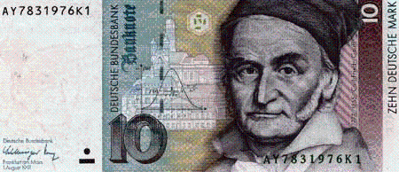
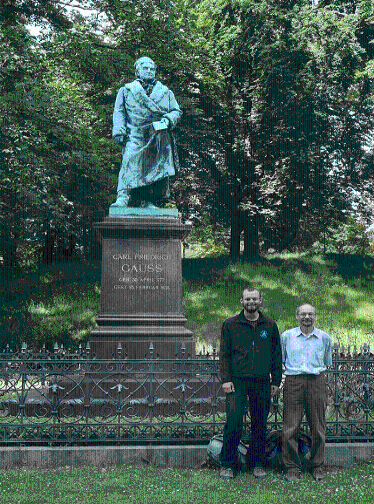
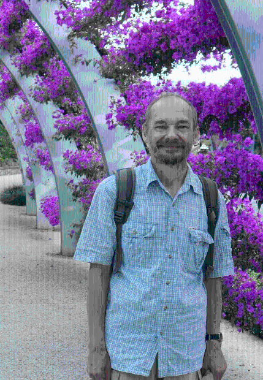
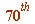
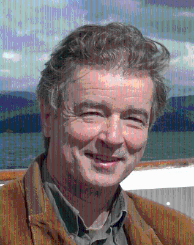
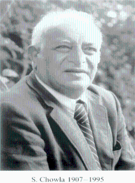
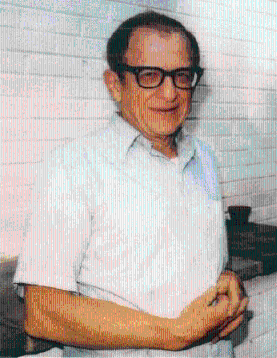
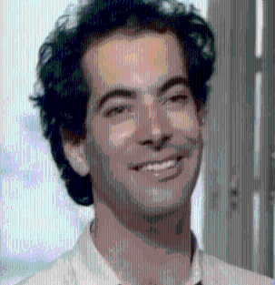

Photos of Gauss, Karl, Beukers, Chowla-Dwork-Evans, and some web links
The great Carl Friedrich Gauss (1777-1855), on the old German 10 deutschmark note:

_________________
A photo in Braunschweig of Karl Dilcher (with son Anton) at statue of CARL FRIEDRICH GAUSS:

In Australia, summer 2016:

Karl was in Australia giving a talk (on some of our work) at a meeting
honouring Richard Brent on the occasion of his  birthday.
That (beautifully organised) talk (Karl is the perfect speaker),
Generalised Fermat Numbers: Some Results and Applications,
is available at http://johnbcosgrave.com/publications.php
_________________
Frits Beukers (1953 - , Leiden University)

_________________
Sarvadaman Chowla (1907-1995), Princeton Institute for Advanced Studies:_________________
Bernard Dwork, Princeton Institute for Advanced Studies (1923-1998):

_________________
Ronald Evans, University of California at San Diego:
(photo, Moscow, 1982, four years before the Chowla-Dwork-Evans paper)
The Chowla-Dwork-Evans (1986) paper is on the internet; just do a Goolge search for 'Chowla Dwork Evans' and it should be at the top or near the top of the search outputs.